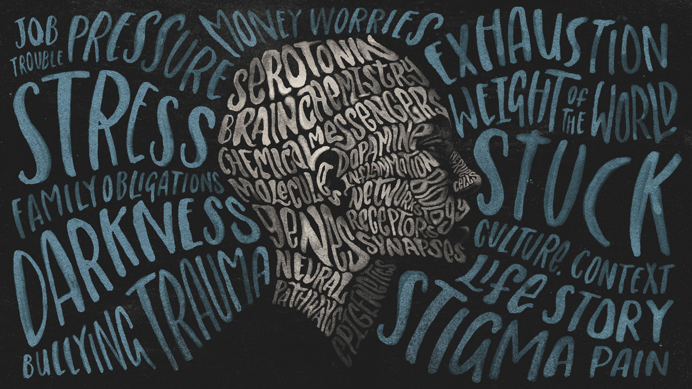

Depression is a tough mental health challenge where people feel really sad, lose interest in things they used to enjoy, and may have trouble sleeping or eating. It's not just feeling down for a day; it sticks around and affects daily life. Sometimes, it's caused by genetics, brain chemistry, or tough life experiences. People with depression might feel isolated and find it hard to concentrate. The good news is, there are ways to get help, like talking to a therapist or using medication, to start feeling better and regain a sense of happiness and balance.
To avoid feeling really sad all the time, try to take care of yourself. Make sure you get enough sleep, eat healthy food, and move around by playing or exercising. It's also good to have friends or family to talk to when you're feeling down. Doing things that make you happy and setting small goals can help. If you ever feel really, really sad a lot, it's okay to ask an adult for help, like a teacher or a doctor. They can help you feel better.
